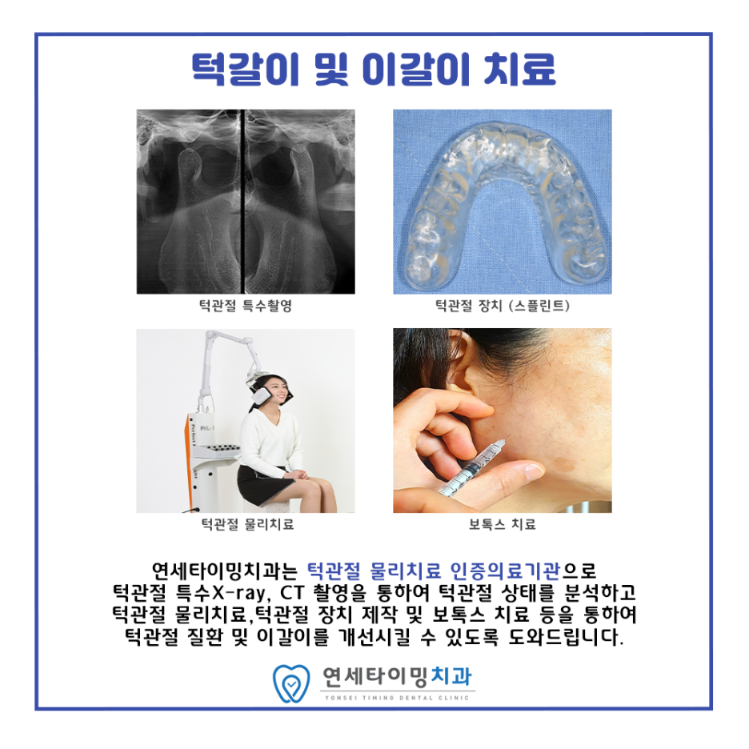
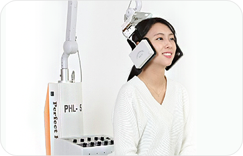
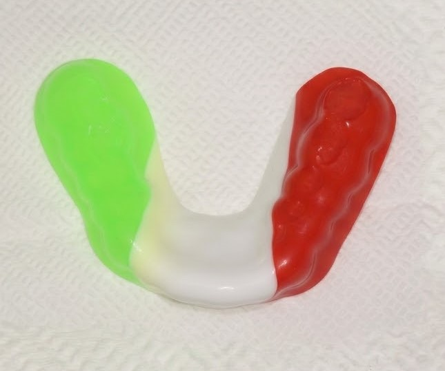

Botox Therapy
과부하 근육을 풀어주는
턱관절 보톡스
턱관절 통증은 관절 자체보다 주변 근육의 과도한 긴장에서 비롯되는 경우가 많습니다. 보톡스로 교근(사각턱 근육)과 측두근(관자놀이)의 힘을 일시적으로 약화시켜 관절 압력을 줄이고, 만성 두통과 편두통까지 개선합니다. 해부학적 지식을 바탕으로 정품·정량만 사용합니다.
턱을 벌릴 때 소리가 나거나 통증이 느껴지시나요? 턱관절 장애는 방치하면 안면 비대칭이나 만성 두통으로 이어질 수 있습니다. 연세타이밍치과는 턱관절 전용 X-ray로 하악과두의 마모·위치를 면밀히 분석하고, 고성능 레이저·TENS 저주파 전기자극·적외선 온열 등 대학병원급 물리치료 시스템으로 안전하게 턱관절의 균형을 되찾아 드립니다.

턱관절 스플린트는 개인별 맞춤형으로 제작된 투명 장치를 치아에 장착하여, 턱관절에 가해지는 과도한 압력을 분산시키고 아래턱을 안정적인 위치로 유도하는 치료입니다. 이갈이·이 악물기로부터 치아 마모를 막고, 저작근의 긴장도를 낮춰 만성 근육통을 개선합니다.

턱관절 통증은 관절 자체보다 주변 근육의 과도한 긴장에서 비롯되는 경우가 많습니다. 보톡스로 교근(사각턱 근육)과 측두근(관자놀이)의 힘을 일시적으로 약화시켜 관절 압력을 줄이고, 만성 두통과 편두통까지 개선합니다. 해부학적 지식을 바탕으로 정품·정량만 사용합니다.
만성 턱관절 통증이나 디스크 손상은 단순 통증 완화로는 한계가 있습니다. 연어 정소에서 추출한 DNA 성분 PDRN을 턱관절 인대·힘줄·관절낭에 주입하면, 세포 재생과 미세 혈관 형성이 촉진되어 약해진 조직이 탄탄하게 복구됩니다. 1~2주 간격 3~5회 시술을 권장합니다.

격렬한 운동·접촉 스포츠에서 발생하는 충격은 치아 파절·잇몸 손상은 물론 턱관절 부상까지 이어질 수 있습니다. 디지털 구강 스캐너로 치아·잇몸 라인을 정밀 채득한 맞춤형 마우스피스는 기성품과 달리 격렬한 움직임에도 흔들림 없이 밀착되어, 치아 보호와 경기력 향상을 동시에 도와줍니다.
